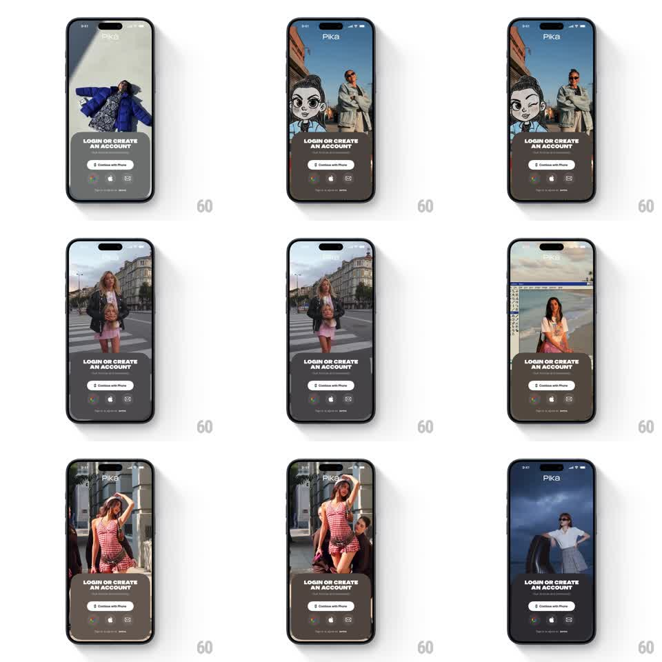

Media
Frame-by-frame

Rebuild this animation 1:1: Pika's video onboarding - a full-screen background showcase of AI-generated clips (fashion shots, cartoon avatars, runway, city streets) crossfading continuously behind a static dark login sheet pinned to the bottom.

Rebuild this animation 1:1: Pika's video onboarding - a full-screen background showcase of AI-generated clips (fashion shots, cartoon avatars, runway, city streets) crossfading continuously behind a static dark login sheet pinned to the bottom. ## Integration Integration: stack-agnostic spec - springs given as stiffness/damping, timed motions as duration + curve; map every value to your framework and animation library of choice. ## Scene Dark screen: "Pika" wordmark top-left, a full-bleed background video cycling through portrait AI clips (woman in blue puffer, cartoon avatar over street scene, runway model, checkered dress), and a fixed bottom sheet: "LOGIN OR CREATE AN ACCOUNT", a white "Continue with Phone" button, a row of Google/Apple/email providers, and a terms line. ## Motion spec Pattern: looping background showcase, ~3s per clip. - Cycle: each clip plays 2.5-3.5s, then crossfades to the next (500ms, ease-in-out) with a 4% slow zoom on the outgoing one (scale 1 -> 1.04). - Sheet: the login sheet slides up once on load (400ms, ease-out) and never moves again. - Scrim: a dark gradient scrim (40% -> 70%) sits between video and sheet, constant. ## Calibration - The sheet is the anchor - the background is purely ambient and must not move it. - Video stays muted and letterbox-free, edge-to-edge. ## Reduced motion Static first clip with a 300ms fade-in; no cycling, no zoom. ## Don't miss - The crossfade is the whole effect - no cuts, no slide. - Provider buttons stay crisp over the moving background via the scrim.